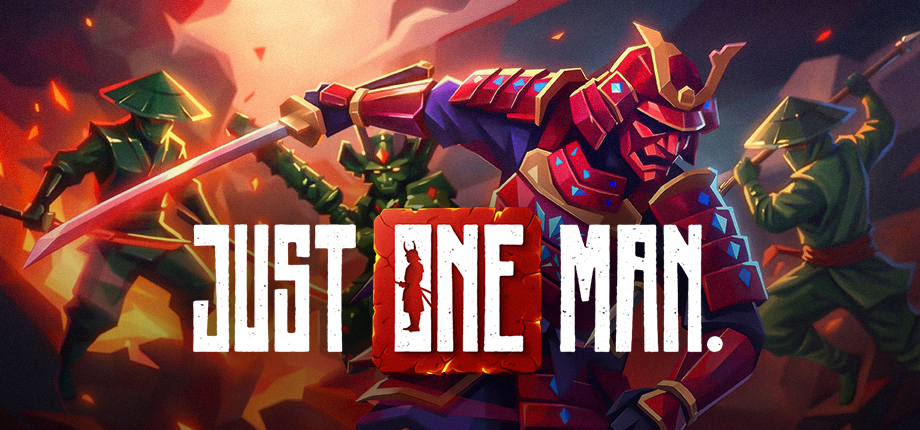

Released VR Title
JUST ONE MAN
Released VR hack-and-slash combat game and the main current portfolio highlight. My contributions span gameplay, combat-facing systems, onboarding, UI, shaders, enemies, endless mode, scoring, skins, shop work, Unity Cloud leaderboards, and Quest/Steam authentication + much more.
